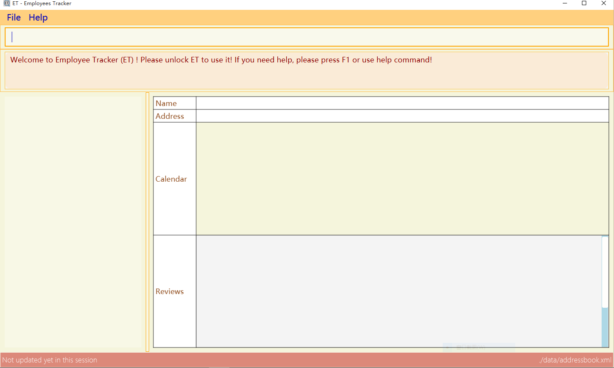

Overview
The Employees Tracker (ET) is a human resource management software. It aims to provide a one-stop solution for managers to manage their subordinates. Two of its major selling points are employees profile management as well as task tracking. Since most managers can type fast, ET is designed to have a Command Line Interface (CLI) as to allow its users to carry out operations efficiently without having to switch between the keyboard and mouse. Nonetheless, ET has a Graphical User Interface (GUI) to allow more direct visual feedbacks.
ET is developed using JAVA 8, and JavaFX and has about 10 kLoC.
Summary of contributions
-
Major enhancement: Notification System
-
What it does: It shows notification cards to users to remind them about the expiry of the tasks that they have assigned to their subordinates.
-
Justification: Life as a manager is busy. It is very difficult for them to keep track of all the tasks being carried out in his team. This feature alleviates their pain by removing the need for them to remember the details of each task.
-
Highlights: This features requires a seamless integration with all other components of the app, from UI to Logic and even storage, in order to work properly. That said, when designing the interface between the Notification System and each other components, one has to know what is the best design choice, considering the constraints of the component. Nonetheless, in order to present notifications in an elegant way that doesn’t confuses the users, a considerable amount of insights into UX and UI designs is required.
-
-
Minor enhancement: added rating feature to allow users to record the performance of each employee.
-
Code contributed: [Functional code [Test code]
-
Other contributions:
-
Project management:
-
Oversees milestone v1.5rc and v1.5 on GitHub
-
-
Enhancements to existing features:
-
Develops the command-suggestion system that gives hints on command usages dynamically according to text that users type (Pull request #132)
-
-
Documentation:
-
Did cosmetic tweaks to existing contents of the User Guide: #14
-
-
Community:
-
Tools:
-
Integrated a third party library (emoji=java) to the project (#53)
-
-
Contributions to the User Guide
Given below are my contributions to the User Guide. They showcase my ability to write documentation that are easy to be understood by end-users. |
Quick Start
This section contains essential information and instructions to help you to start using E.T. quickly.
Setting up
If you are using E.T. for the first time, please set up E.T. by following the instructions below carefully:
-
Ensure you have Java version
1.8.0_60or later installed in your computer.Having any Java 8 version is not enough.
This app will not work with earlier versions of Java 8. -
Ensure that you have access to the internet.
-
Download the latest
et-employeestracker.jarhere. -
Copy the file to the folder you want to use as the home folder for your E.T.
-
Double-click the file to start the app. The user interface should appear in a few seconds, as shown in Figure 1.
Figure 1. User Interface. -
Type
unlockin E.T. and press Enter to unlock E.T. You will be greeted by a pop-up window as shown in Figure 2. Figure 2. Pop-up window on top of E.T.
Figure 2. Pop-up window on top of E.T. -
Type the default password
adminin the pop-up window and press Enter or left-click on theUnlockbutton at the bottom right corner of the pop-up window. The pop-up window will then disappear. -
Type
authenETin E.T. and press Enter to authorize E.T. You will be directed to an authorization web page as shown in Figure 3. Figure 3. Authorization web page.
Figure 3. Authorization web page. -
Click on
allowat the bottom right corner. -
Close your browser and return to E.T. once you see a web page with a confirmation message similar to that in Figure 4.
 Figure 4. Confirmation message.
Figure 4. Confirmation message.
| The above instructions are only for first-time users. However, because E.T. is locked by default for security purposes, you will need to follow step 4, 5, 6 for every time you open E.T. in the future. Of course, if you have changed your password, then you will need to execute step 6 with your new password. |
After setting up, you can start using E.T. by typing commands and press Enter to execute it.
e.g. typing help and pressing Enter will open the help window.
Refer to [Commands] for more details on commands.
Knowing the User Interface
The User Interface will be the application’s interface that you will interact with. E.T. has a Graphical User Interface (GUI) instead of a Command Line Interface (CLI).
Figure 5 shows the 5 major components of the GUI of E.T. :
-
Command Box: where you type in commands.
-
Result Display Box: where E.T. shows text result to you.
-
Employees List Panel: where the list of all employees is shown.
-
Employee’s Profile Panel: where the details of the selected employee is shown.
-
Notification cards: where E.T. reminds you about events.

Reading the result display box
The result display box shows 3 types of information:
-
Error messages in red if the command you entered does not exists or does not match the pre-defined format.
-
Hints about the format and usage of the command in maroon.
-
Status of E.T. in maroon if your command is processed successfully.
Whenever you type keyword of a command in the Command Box, E.T. will provide hints about its usage.
|
Understanding the notifications
E.T. has a 2 phase notification system, i.e. there will be 2 notification cards popping up to remind you of each event:
-
The first phase notification will pop out in a blue notification card, on the day of expiry, as shown in Figure 6.
-
The second phase notification will pop out in a red notification card, at the exact time of expiry, as shown in Figure 7.

For example, suppose you have assigned a task to Alex which will due on 15th Apr 2018 0032 hrs. When you open E.T. for the first time in the morning of 15th Apr 2018, you will be notified that Alex has a task that will due on today in a blue notification card. Later at 0032 hrs of 15th Apr 2018, you will receive the second phase notification in red, informing you that Alex should have finished the task by now.
Notification cards will disappear from the screen after 5 seconds and will be stored in the Notification Center. If you want to refer to them later, use noti command or double press Shift to open the Notification Center.
Also, if you minimizes E.T. to use other software, E.T. is capable of showing notification cards in your computer’s system (e.g. Windows, Mac, Linux, etc.), as shown in Figure 8. However, this feature may not work on some computer systems.
Rating an employee : rate
Updates the rating of an existing employee in E.T.
Format: rate INDEX RATING
|
Examples:
-
list
rate 1 5
Gives the 1st employee in the last employees listing a 5-stars rating. -
find Alex
rate 2 2
Gives the 2nd employee in the list of Alex(s) a 2-stars rating. === Toggling the notification center :noti
Shows the notification center if it is hidden or hides the notification center if it is shown.
Format: noti
| Alternatively, you can double press SHIFT to toggle the notification center. |
Dismissing a notification card : dismiss
Dismisses the notification card identified by the index number.
Format: dismiss INDEX
Reminding an employee through email : email
Opens up the email app of the computer to send a reminder email about the notification identified by the index number used in notification cards.
Format: email INDEX
|
Reminding an employee through WhatsApp : emailall
Opens up the email app of the computer to send a reminder email to all persons who has a task ended.
Format: emailall INDEX
|
Contributions to the Developer Guide
Given below are sections I contributed to the Developer Guide. They showcase my ability to convey technical ideas in a professional and comprehensible way as well as the technical depth of my contributions to the project. |
Edit and rate a person
This section presents the implmentation of edit command and rate command, which are implemented in a similar manner. The only difference is that rate can only change the Rating field, but edit can be used to change any field.
Current Implementation
There are 4 classes that play a vital role in the current implementation:
-
Person
-
EditCommandParser or RateCommandParser
-
EditPersonDescriptor
-
EditCommand
The following code snippet shows the fields of the EditPersonDescriptor class, which is an internal class of EditCommand.
public static class EditPersonDescriptor {
private Name name;
private Phone phone;
private Email email;
private Address address;
private Set<Tag> tags;
private Set<Review> reviews;
private Rating rating;
private Photo photo;
}Note that the EditPersonDescriptor has the exact same fields as the Person class.
Each of the fields is used to contain the corresponding new value of the field. For example, suppose the user wants to edit the name from "Alek" to "Alex", "Alex" will be stored in the name field of EditPersonDescriptor.
Figure 11 below shows the sequence diagram of the execution of rate command. Edit command has an exactly same execution, RateCommandParser will be replaced with EditCommandParser while RateCommand will be replaced with EditCommand.

The important method calls during the execution of edit and rate command includes:
-
parse(args):
EditCommandParserextracts the new information for each field from user input. -
EditPersonDescriptor():
EditPersonDescriptoris used to record which field(s) will be changed and the respective new value. -
getFilteredPersonList(): The original Person,
toEditis obtained fromModel. -
person():
editedPerson will be created, by obtaining the new value for modified fields fromEditPersonDescriptor. The value of unmodified field(s) are obtained fromtoEdit. -
updatePerson(toEdit, edited):
editedPerson is used to replacetoEditPerson inAddressBook.
This current implementation of edit command is by courtesy of the original AddressBook application. The W15B1 team is only responsible for adapting the implementation into rate command.
|
Design Considerations
This section showcases some of the alternative designs for the implementation of rate and edit command.
There are 2 ways to update information regarding a Person object.
-
Alternative 1 (current implementation): Creates a new
Personobject that contains the new information to replace the oldPersonobject-
Pros: data integrity is guaranteed, higher cohesion (all modifications on data must be done through
Model) -
Cons: implementation is more complicated
-
-
Alternative 2: Uses setter methods on the
Personobject-
Pros: implementation is simple
-
Cons: data integrity is compromised (the
Personobject can be modified by any entity), more coupling === Notification System This section discusses about the implementation of the notification feature of Employees Tracker.
-
All usages of the word Event in this section refers to the class com.google.api.services.calendar.model.Event,
not to be confused with Event classes in commons package which will be referred in their full name,
e.g. BaseEvent, AddressBookChangedEvent.
|
Current Implementation
This section shows how the Notification System is implemented in the current version of ET.
Introduction
In the current implementation, the major classes and objects of the notification system includes:
-
The
Notificationclass that stores of essential information for eachEvent. -
The LinkedList of
Notificationin theAddressBookclass that stores allNotificationobjects. -
The
NotificationCardclass, which is a graphical representation ofNotification. -
The
Notification Centerclass that stores all theNotificationCardobjects. -
The
MainWindowclass that is involved in showingNotificationCardobjects on the GUI. -
The
Modelclass that initiates the add notifications and delete notifications operations.
Please refer to the class diagram below for the association between them.

Initialization of the Notification System
For every time the app starts, the following initialization operations will be carried out:
-
AddressBookand LinkedList ofNotificationis read from storage. -
MainWindowis created. -
MainWindowcreates aNotificationCenter. -
MainWindowpasses theNotificationCentertoModelthroughLogic.
Add-Notification Operation
The following steps show how a Notification is added to the Notification System:
-
A
Notificationis created. -
Modelto add theNotificationinto theNotificationslist inAddressBook. -
Modelraises aAddressBookChangedEventandNotificationAddedEventafter adding the Notification. -
Storagehandles theAddressBookChangedEventand saves the new list of Notifications. -
Logichandles theNotificationAddedEventand decides when to show the notification. -
When it is time to show the notification,
Logicwill requestUito show a notification. -
Uiwill instructMainWindowto show a notification. -
MainWindowwill create aNotificationCardand shows it to user on-screen. -
MainWindowwill create another copy of the sameNotificationCardand stores it in theNotificationCenter
Find-owner-name operation
Each Event is assigned (and thus) to an employee. In the following discussions, we will use the phrase owner to refer to the employee who is assigned to the Event.
|
Note that the Notification class only contains a field called ownerId instead of the name, email, etc. of its owner.
The information of the owner of a notification is retrieved through the findPersonById mechanism.
The following are the details of the mechanism:
-
AddressBookclass has anextIdinteger field. -
Whenever an employee is added,
addressBookassigns thenextIdto him and increment thenextIdfield. -
The
Personclass has anidfield to store the id. -
When a
Notificationis created, it has aownerIdfield that stores theidof itsowner. -
To retrieve the owner of a
Notification, callfindPersonById(ownerId)to obtain thePersonowner. Then, use getter methods to obtain relevant information.
Delete-notification operation
Delete-notification operation has a simpler implementation compared to Add-notification operation. Please refer to Figure 19 below for the flow of the operation.

|
Add-notifications-at-startup operation
At each startup, after initializing the Notification System, ET will then go through the LinkedList of Notification in AddressBook.
For each Notification in the LinkedList, NotificationAddedEvent will be called.
That said, this may result in multiple threads attempting to make GUI operations at the same time through MainWindow.showNewNotification.
This will result in concurrent modification issues. Thus, Semaphore is used to prevent those issues. Please refer to the simplified code of MainWindow.showNewNotification at below.
//current implementation only allows 1 thread to enter showNewNotification() at the same time. Semaphore = new Semaphore(1);
/**
* Show in-app notification
*/
public void showNewNotification(ShowNotificationEvent event) {
logger.info("Preparing in app notification");
//...metadata update
//hides notificationCard away from screen
notificationCard.setTranslateX(NOTIFICATION_CARD_WIDTH);
try {
semaphore.acquire();
} catch (InterruptedException e) {
e.printStackTrace();
}
notificationCard.setTranslateY(UP * shownNotificationCards.size() * NOTIFICATION_CARD_HEIGHT);
shownNotificationCards.add(notificationCard);
semaphore.release();
//enter animation
Platform.runLater(new Runnable() {
@Override
public void run() {
mainStage.getChildren().add(notificationCard);
animateHorizontally(notificationCard, NOTIFICATION_CARD_WIDTH, ENTER);
Timer timer = new Timer();
TimerTask timerTask = new TimerTask() {
@Override
public void run() {
//it should be the first notification card to exit first
try {
semaphore.acquire();
} catch (InterruptedException e) {
e.printStackTrace();
}
Region firstNotificationCard = shownNotificationCards.removeFirst();
//cards are reused later in notification center
animateHorizontally(firstNotificationCard, NOTIFICATION_CARD_WIDTH, EXIT);
moveAllNotificationCardsDown();
semaphore.release();
}
};
timer.schedule(timerTask, NOTIFICATION_CARD_SHOW_TIME);
}
});
}
Design Considerations
There are a couple of aspects with regards to Notification that can be implemented in alternative designs.
Aspect: extracting a Person’s information
-
Alternative1 (current choice):
searchEmployeeByIdmechanism.-
Pros: provides the latest information even if the
Personis edited after theNotificationis created. -
Cons: requires
idfield to be implemented inPersonandAddressBookclass, provides wrong information ifidis not implemented correctly (e.g. repeated id).
-
-
Alternative2: storing the Person’s Information in
Notificationclass.-
Pros: has a simpler implementation.
-
Cons: provides wrong information if
Person's information is edited afterNotificationis created, requires to updateNotificationwhenPersonis edited, increases coupling.
-
Aspect: storing Event locally
-
Alternative1 (current choice): stores a list of
NotificationsinAddressBook.-
Pros: ensures that notification feature remains working when there’s no internet access, saves storage space as only essential information is saved.
-
Cons: has a complicated implementation (creation of
Notificationclass and edit ofPersonandAddressBookclass forsearchEmployeeByIdmechanism).
-
-
Alternative2 : stores a list of
EventinAddressBook.-
Pros: has a simpler implementation (doesn’t need to implement
Notificationclass). -
Cons: requires another mechanism for extracting
ownerNamebecauseEventclass does not storeownerName, waste of storage space becauseEventclass contains a lot of information unnecessary for notification feature.
-
-
Alternative3 : stores a list of
NotificationsinPerson.-
Pros: has a simpler implementation (doesn’t need to implement
searchEmployeeByIdmechanism). -
Cons: compromises performance, especially when there are a lot of employees and only a few
Notification.
-
-
Alternative4 : does not store
Eventlocally (relies on Google calendar service).-
Pros: has the simplest implementation (only need to pull data from Google, does not need to create local class), saves storage space as nothing is stored locally.
-
Cons: compromises notification feature if there’s no internet access, requires another mechanism for extracting
ownerNamebecauseEventclass does not storeownerName, compromises performance if internet speed is slow).
-